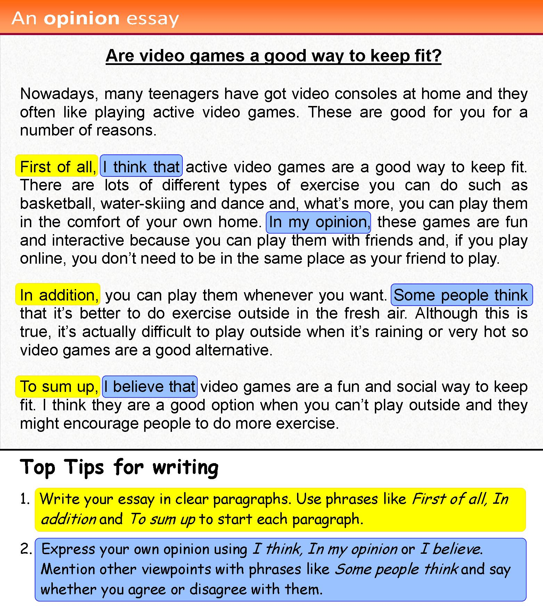

Instructions
Do the preparation exercise first. Then do the other exercises.
Reading

Discussion
Are video games really a good way to keep fit? What do you think?
Language level
Topics
Personal online tutoring
EnglishScore Tutors is the British Council’s one-to-one tutoring platform for 13- to 17-year-olds.

Comments